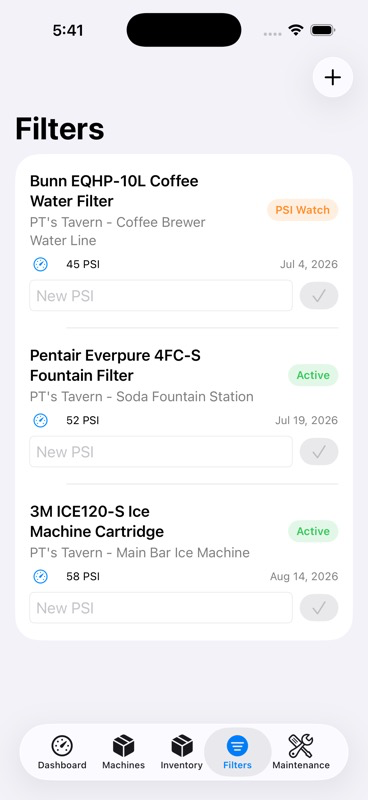
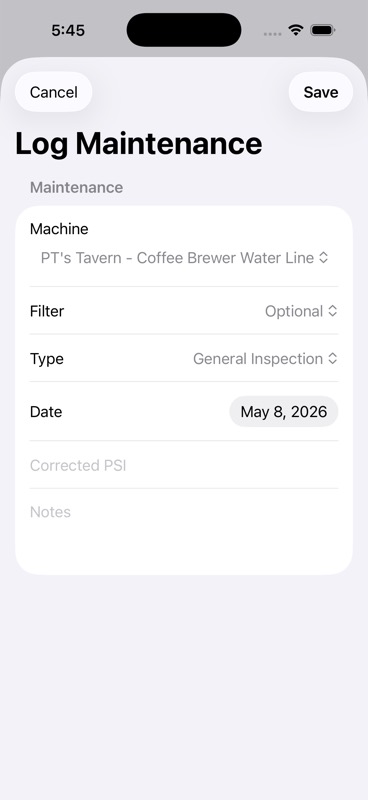

Small Business
1 ubicación
Dashboard · Máquinas · Filtros · AlertasPortada
Bastida Systems · Las Vegas, Nevada


Nuestra solución
Una sola capa para activos, condición, mantenimiento, costos y evidencia.
Capturas del sistema



Cómo funciona


Bastida Systems
Bastida Systems construye productos prácticos para equipos que necesitan pasar de caos operativo a control medible.
Filter management + maintenance evidence
Event / banquet operating flow
Focused SaaS for fragmented workflows

Bastida Systems · bastidasystems@gmail.com · +1 (702) 661-7149